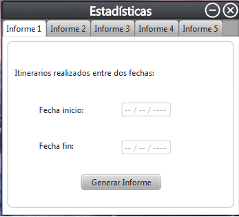
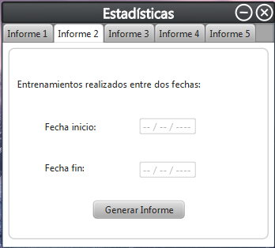
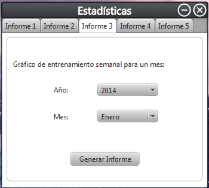
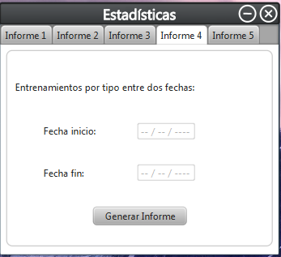
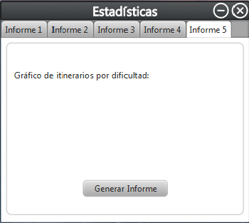

Pantalla de perfil usuario
Esta son las pantallas de perfil del usuario donde se pueden observar las estadisticas de los usuarios mediante la generacion de informes.





El informe 1 muestra los itinerarios realizados entre dos fechas. Para ello se introduce la fecha de inicio y la de fin y damos al boton -Generar informe-.
El informe 2 muestra los entrenamientos realizados entre dos fechas. Para ello se introduce la fecha de inicio y la de fin y damos al boton -Generar informe-.
El informe 3 muestra el grafico de entrenamiento semanal para un determinado mes. Para ello se introduce el año y el mes y damos al boton -Generar informe-.
El informe 4 muestra el entrenamiento por tipo entre dos fechas. Para ello se introduce la fecha de inicio y la de fin y damos al boton -Generar informe-.
El informe 5 muestra el grafico de itinerarios por dificultad. Para ello se introduce la fecha de inicio y la de fin y damos al boton -Generar informe-.